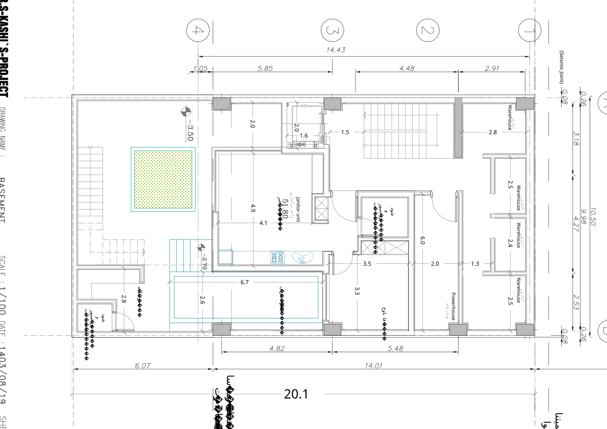

نقشه · طرح ۱۴۰۳
پلان زیرزمین
زیرزمین (−۳٫۵۰)
بازترسیم شماتیک از روی شیت، تقریبی؛ ترازها فرضیاند.
بازترسیم شماتیک از روی شیت، تقریبی؛ ترازها فرضیاند.

{kind=link}
برداشت
همان زیرزمین، چهار سال بعد و با اندازههای بزرگتر: خانهٔ سرایدار جای واقعی یک خانه را دارد، کنارش استخری کشیده در دیوار شرقی، و رو به کوچه ردیف چهار انباری و موتورخانه. در انتهای جنوبی باز هم زمین باز میشود و پلهای پهن به حیاط میرسد. معمار این طبقه را طبقهٔ مشترک ساختمان میخواند؛ درختی اما در آن نیست.
با شاخصها میخواند
- شاخص ۶: واحد سرایدار با نشیمن، آشپزخانه، خواب و دوش، رو به گودال باغچه.
- شاخص ۷: استخر بهجای حوضچه؛ بعدها قرار شد حوض شود.
- شاخص ۱۰: چهار انباری در یک ردیف، یکی برای هر واحد.
- شاخص ۱۳: طبقهٔ ۱− ساخته شده و معمار آن را طبقهٔ مهم مشترک ساختمان خواند.
چه چیزی را کم دارد
- درختی نیست؛ باغچه فقط یک مربع نقطهچین است.
- فضای کششی و سونا نیست، و استخر کشیده با حوضچهٔ نشستن دوسه نفره فاصله دارد.
- طبقهٔ ۲− باز هم نیست.
- مرز سرایداری و فضای مشترک روشن نیست؛ معمار خودش پرسید این واحد سرایداری است یا تفریحی.
چه چیزی اضافه میکند
- پلهٔ پهن گودال باغچه که مستقیم به حیاط میرسد: زیرزمین راه خودش را به بیرون دارد.
- دو تراز در یک زیرزمین: کف واحد کمی بالاتر از کف باغچه، با پلهای کوتاه در انتهای استخر.
چه پرسشی باز میماند
- طبقهٔ ۲−: اگر این طبقه مال سرایدار و انباریهاست، اتاق مشترک کجا میرود؟
- درخت: بازشوی فونداسیون برای درخت باید همینجا معلوم شود.
- نفس کشیدن بدون سروصدا: راه هوای زیرزمین به بام ترسیم نشده.
چطور میشد بهتر باشد
- میشد استخر به حوضی گوشهای با کاشی فیروزهای و کابین سونای خشک بدل شود، برجسته از کف؛ معمار این را پذیرفت.
- میشد پله قیچی باشد و در کنج بنشیند تا عرض کمتری بگیرد.
- میشد ارتفاع آزاد زیر سقف کاذب نزدیک به سه متر گرفته شود و کانالی برای تهویه تا بام دیده شود.
جزئیات روی شیت
- «استخر شنا» ۶٫۶۶×۲٫۶۰ (کادر آبی) در ضلع شرقی زیرزمین، کنار آشپزخانهٔ سرایدار.
- «واحد سرایداری / Janitor unit» با مساحت ۵۱٫۸۰ متر مربع: نشیمن ۴٫۹۲×۴٫۱۲، اتاق خواب ۳٫۳۴×۳٫۵۰، دوش و سرویس بهداشتی.
- گودال باغچه در سمت چپ (جنوب) با تراز −۳٫۵۰، باغچهٔ مربعِ نقطهچین و پلهٔ بلندی که در ضلع غربی به حیاط میرسد.
- پلهٔ کوتاه با تراز −۲٫۷۰ در انتهای استخر: اختلاف ۰٫۸۰ متری میان کف واحد و کف باغچه.
- چهار انباری (Warehouse) در ضلع شمالی (خیابان) با عرضهای ۲٫۸۳، ۲٫۵۰، ۲٫۴۰ و ۲٫۴۵.
- موتورخانه (Powerhouse) در دهانهٔ شمالشرقی؛ آبدارخانهٔ ۲٫۸۰ و دوش و سرویس بهداشتی در گوشهٔ جنوبغربی.
- محورهای ۱ تا ۴ با فاصلههای ۲٫۹۱ | ۴٫۴۸ | ۵٫۸۵ | ۱٫۰۵ = ۱۴٫۴۳ و محورهای A تا D با عرض ۱۰٫۵۰؛ ستونهای خاکستری در تقاطعها.
- خط اندازهٔ پایین: ۶٫۰۷ حیاط + ۱۴٫۰۱ بدنه = ۲۰٫۱۴۰ طول زمین؛ ۱۲٫۰۰ عرض خیابان در سمت راست.
- دو یادداشت فارسی حاشیه: «پیشروی مجاز ساختمان بر اساس ۶۰ درصد به اضافه ۲ متر» و «کنسول ۶۰ سانتیمتری مجاز برای طبقهٔ اول».
فضاها
واحد سرایداری (نشیمن، آشپزخانه، اتاق خواب، دوش و سرویس بهداشتی)، استخر شنا، دوش و سرویس بهداشتی، آبدارخانه، موتورخانه، انباری (۴)، گودال باغچه، پلکان و آسانسور
یادداشت
زیرزمین ۱۴۰۳ همان برنامهٔ ۱۳۹۹ را با اندازههای بزرگتر تکرار میکند: سرایدار ۵۱٫۸۰ متری، استخر به جای جکوزی، چهار انباری به جای یکی، و گودال باغچهای که این بار پلهٔ پهنی به حیاط دارد. آنچه حل نشده: درختی ترسیم نشده و باغچه فقط یک مربع نقطهچین است؛ استخر ۶٫۶۶ متری با «حوضچهٔ نشستن ۲ تا ۳ نفره» بند ۷ فاصله دارد و بعدها قرار شد به حوض تبدیل شود؛ سونا و فضای کششی نیست؛ تراز −۲ باز هم نیست. برچسبها فارسیاند با زیرنویس انگلیسی. کادر عنوان: MR.S-KASHI`S-PROJECT / BASEMENT / ۱۴۰۳/۰۸/۱۹ / A3_001.